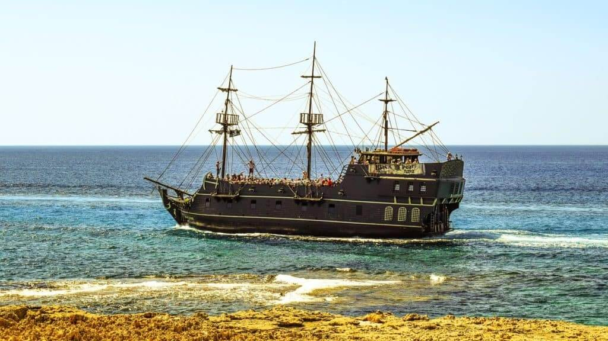

Cozumel Island Tour
Top 3 places you need to visit!
Punta Sur Cozumel Park
Punta Sur Eco Beach is the best beach on the Island, and a visit to this eco-park is definitely one of the top things to do in Cozumel. This area is located on the south of the island and covers an area of 2,500 acres. Here you’ll find exotic birds, crocodiles, sea turtles, beautiful flowers and beautiful beaches – the perfect place for nature lovers.
The Punta Sur Ecological Park has so much to see and do, there’s even a Mayan Ruin here. El Caracol ruin – also called Tumba del Caracol because of its small size – dates back to 1200-1500 AD.
The Punta Sur is a place that you must never forget! the sun and attractions are waiting for you!

Playa Mia Grand Beach Park
If you’re looking to visit a beach park during your trip to Cozumel, consider Playa Mia Grand Beach Park, an ethical adventure park. While there are many “marine parks” that may sound great, Goats On The Road doesn’t recommend visiting them due to the captivity of wild animals.
Check out Playa Mia Grand Beach Park instead
Here, you’ll have use of snorkels, waterslides, pools, kayaks, hobie cats, paddle boats, volleyball courts and more. This park doesn’t have any animals in captivity, which is why we recommend it.
Enjoy a Pirate Cruise With A Lobster Dinner
An Old Spanish Galleon will whisk you away from the port for a splendid 2.5 hour cruise with lots of games and dancing.
This is a fun night full of adventure while enjoying a delicious lobster dinner. If lobster isn’t to your liking, they have options of steak and chicken. As the sun goes down you can enjoy one of Mexico’s amazing sunsets with a Margarita or a cold beer in your hand.
